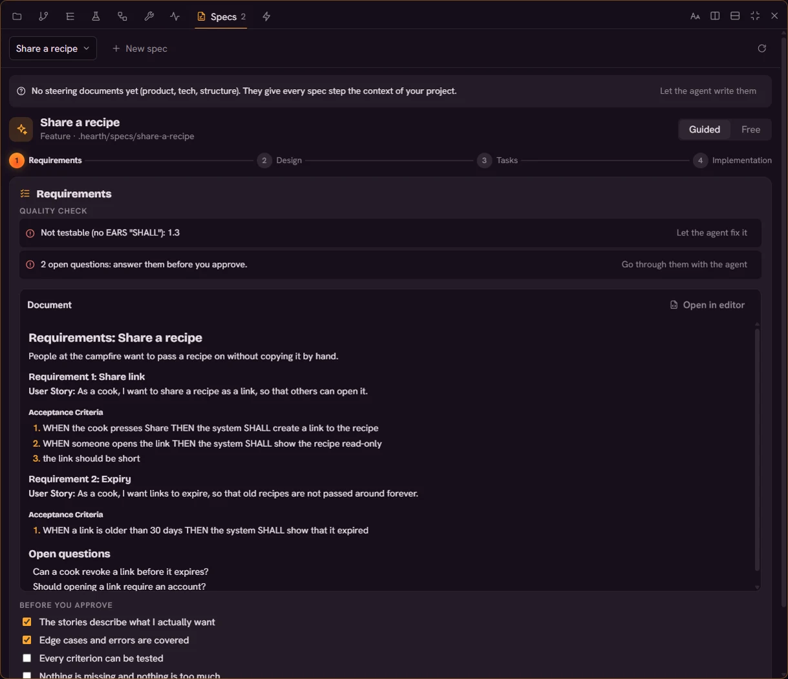
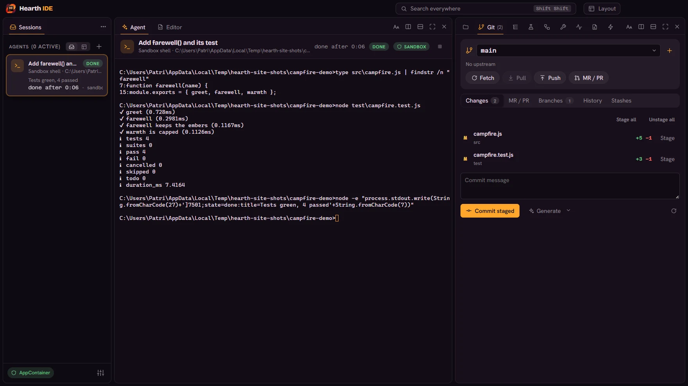

Your agent. Your plan. Our ring of fire.
Claude Code, Codex, Copilot & co. run on your Windows PC just like before – only inside a sandbox that keeps your keys and the rest of your profile out. No WSL, no admin rights. And it guides them from spec to shipped code.
PS>irm https://pvanissem.github.io/hearth-ide-windows/install.ps1 | iex
Not code-signed yet: with Smart App Control switched on, Windows blocks the installer and the sandbox helper. Signed builds are next.
- v0.3 early release
- Windows 10 / 11
- x64
- License MIT
- Sandbox AppContainer
C:\your-projectread + writeNew in v0.3 · spec-driven development
Specs first. Then code.
Hearth takes your agent from an idea to shipped code in four steps. Each step is a document you read and approve before the next one opens. Choose guided if you want a coach, or free if you know the way.
- requirements.md
Requirements
User stories and acceptance criteria in EARS:
you approveWHEN … THEN the system SHALL … - design.md
Design
Architecture, interfaces, data, errors and tests, built on the approved requirements.
you approve - tasks.md
Tasks
Small coding steps, each linked to the criteria it fulfils.
you approve - ▶ start task
Implementation
One task at a time, ticked off as it lands, then checked against every criterion.

Quality check Read, revise, approve Progress & coverage
Up next
Progress & coverage
Up next
What makes it more than a template.
- Quality checkUntestable criteria, missing stories, open questions, requirements no task covers. Each finding comes with “Let the agent fix it”.
- CoverageEvery acceptance criterion traced to the tasks that implement it, from planned to done.
- Interview firstThe agent reads your code and asks up to five questions before it writes a line.
- Three kindsFeature, bugfix with a regression guard, refactoring with what must not change.
- Guided or freeA coach with checklists, or every document at once. Switch whenever you like.
- Your agentClaude Code, Codex, Copilot, OpenCode or Gemini, inside the sandbox. Specs are plain Markdown in your repo, and
.kiro/specsworks too.
Agent hooks tend the fire.
When a turn ends, Hearth looks at what the agent changed and runs your hooks: a prompt for the agent, or a command in the sandbox.
- Agent saved
\.cs$“Update the tests for these files and run them.” - Agent saved
\.tsx?$npm run lintin the sandbox. If it fails, the output goes back to the agent. - Agent finished its turn“Review your diff for bugs, missing tests and leftovers.”
- Agent changed
requirements.md“Bring the design and the tasks back in line.”
Hooks can’t loop: a turn that a hook started never fires hooks. A hook file from a repository, or one the agent wrote, only runs after you allowed exactly that content. Kiro’s .kiro/hooks are read too.
What stays inside the ring.
Hearth starts every agent as a Windows AppContainer process – the isolation Chromium and Store apps use. Nothing to install, no WSL, no admin rights. Inside the ring it works freely:
- read and write
C:\your-project - a private home per agent, where its login lives
- your tools on
PATH, read-only - the internet – or nothing, in offline mode
Kept outside:
SSH keys
shell configuration
cloud credentials
cookies, passwords, sessions
the rest of your profile
read-only for the agent
Honest limits: Windows only lets an AppContainer reach the internet as a whole or not at all, so there is no list of allowed domains as on the Mac. API keys you store for agents are visible to them. Git runs on your PC with hooks switched off.
Your agents, your logins.
Hearth brings no model of its own. It keeps the agents you already pay for in check.
- Claude Codeyour Claude plan, through the official CLIstatus in the inbox via hooks
- CodexChatGPT login or API keystatus via notify
- GitHub Copilot CLIyour GitHub accountin the terminal chat
- OpenCodeany provider OpenCode supportsin the terminal chat
- Gemini CLIyour Google accountin the terminal chat
Any program in the terminal can report its own state with the Program Status Protocol (OSC 7501): working, blocked, done – with progress.
Lit in three strokes.
No account, no configuration. Hearth brings the sandbox, you bring your agents.
Install
The command above downloads the installer of the latest release, checks its SHA-512 checksum and installs Hearth into your user profile. Run it again to update.
Pick a folder
Your project folder is the inside of the ring: it is the only place the agent may write. Or let Hearth clone a repository.
Start an agent
Claude Code, Codex, Copilot, OpenCode or Gemini – with your own login, model and effort, in the terminal of the chat area.
Every fire in one window.
One inbox – as a list or a board – shows which agent is working, waiting or done, and for how long. Next to it: files, Git with pull request review, editor, specs, tests and builds – which run in the sandbox too.

Honest status: v0.3.
Early, but usable – and on par with the Mac version 0.16. This is what works today:
Works
- Agents as a terminal in the chat area
- Guided spec mode with quality check and coverage
- Agent hooks, Kiro-compatible
- Inbox and board with status, timers and notifications
- Git: review, comment on and merge pull requests
- Commit messages written by your agent
- Build & Deployment and tests in the sandbox
- Resume a session or start fresh
- CI/CD for GitLab and GitHub Actions
- English and German
- Search Everywhere with double Shift
- Themes: Hearth Light, Darcula, Storm
Coming next
- Signed builds (Smart App Control may block the unsigned sandbox helper today)
- Native chat via the Agent Client Protocol
- Panes in their own windows
Requirements
- Windows 10 or 11, x64
- at least one agent CLI on your
PATH - Git for the Git pane
Light it up.
PS>irm https://pvanissem.github.io/hearth-ide-windows/install.ps1 | iex